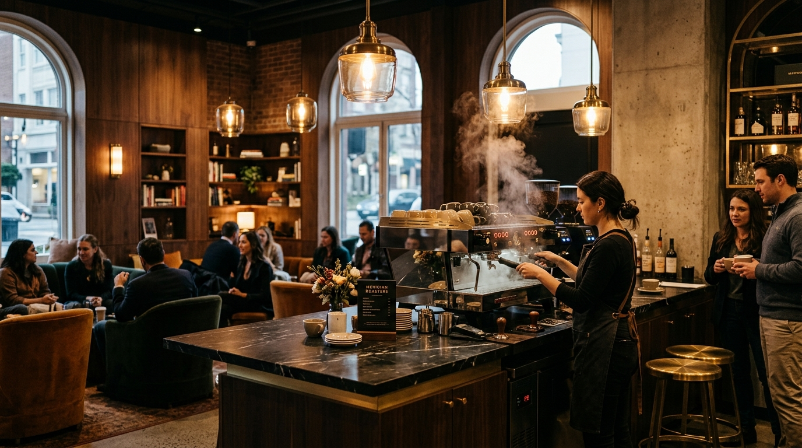
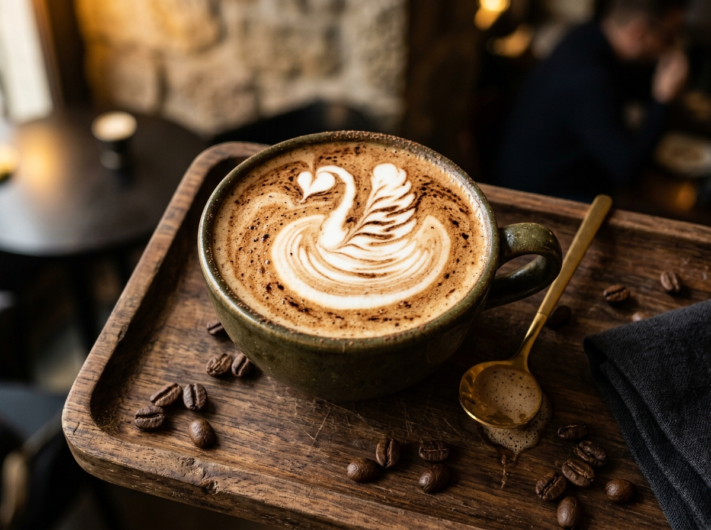
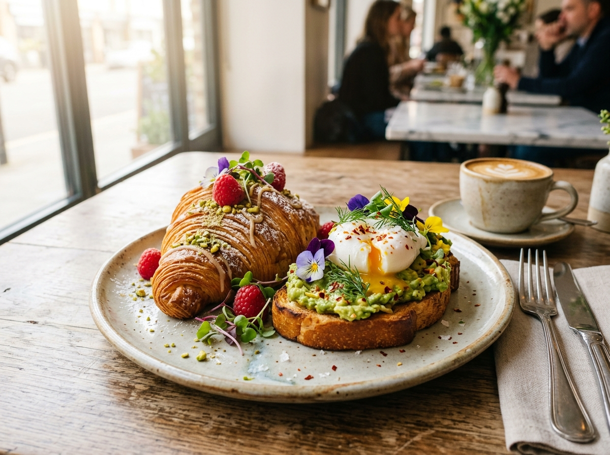

Specialty hill-estate coffees, hand-laminated morning croissants, and tranquil botanical courtyards on 12th Main, Indiranagar.


AMARA was created to celebrate the rich, shade-grown coffee heritage of Southern India within a calm, design-forward botanical retreat in Indiranagar.
We source our Arabica micro-lots directly from third-generation family estates in Chikmagalur, Coorg, and Biligirirangana Hills. Roasted fresh in small batches on-site, each pour highlights notes of jaggery, cardamom blossom, and dark chocolate.
Nurtured beneath native silver oak and jungle shade trees at high altitude.
Profiles calibrated weekly to preserve origin fruit sweetness and floral aromatics.
French butter croissants, sourdough loaves, and seasonal tea cakes baked before sunrise.
Terrazzo flooring, cane furniture, lush monstera courtyards, and warm sunlit corners.
"The prettiest slow-brew café in Indiranagar. Their Chikmagalur pour-over is unparalleled."
"A masterclass in tropical minimalism. Exceptional bakes and serene courtyards."
"The go-to morning sanctuary for Bengaluru's design and specialty coffee crowd."
"Easily the best flat white in Indiranagar. The aesthetic is so calming—perfect for a quiet read or meeting."
— Ananya Rao, Architect"The almond croissant paired with the cold brew tonic made my Sunday. Courteous staff who genuinely know coffee."
— Rohan Menon, Food Writer"Booking a table was effortless, and the outdoor courtyard seating feels like a calm oasis away from Bengaluru traffic."
— Priya Sundaram, Creative LeadQuick 1-minute reservation. Instant confirmation on screen & WhatsApp/SMS.
742, 12th Main Road, HAL 2nd Stage, Indiranagar, Bengaluru, Karnataka 560038
Nearby Metro: Indiranagar Metro Station (5 min walk)Monday – Friday: 7:30 AM – 10:30 PM
Saturday – Sunday: 7:00 AM – 11:00 PM
Your table at AMARA Bengaluru is confirmed. We look forward to hosting you.